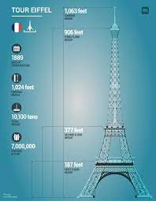

At first, when it was built for the 1889 World's Fair, it impressed the entire world by its stature and daring design, and symbolized French know-how and industrial genius.

The tower itself is 300 metres (984 feet) high. It rests on a base that is 5 metres (17 feet) high, and a television antenna atop the tower gives it a total elevation of 330 metres (1,083 feet).
It Took 22 Months to Complete, The Eiffel Tower Is Made of Iron. ,The Eiffel Tower Has Three Floors.